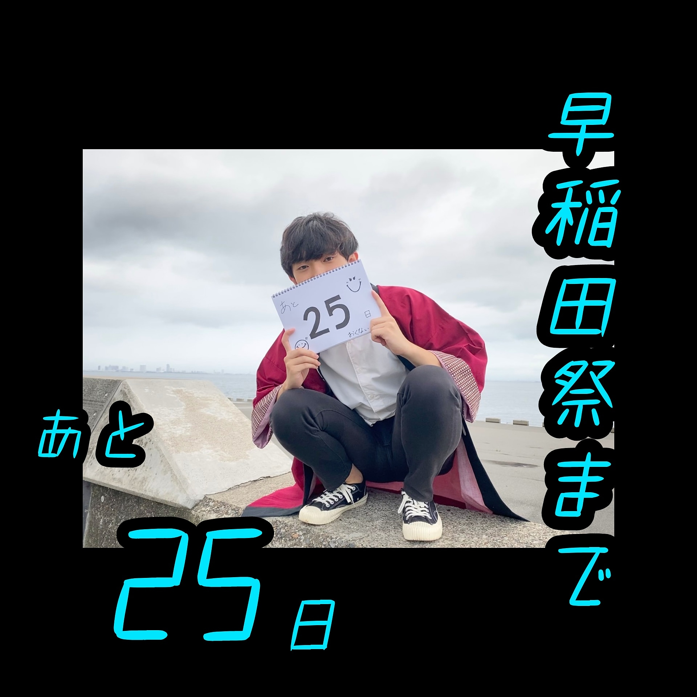

デザインチーム
廣田岳
皆さんは何に心を動かされますか。
私は「人の心を動かす」ことに心を動かされ、運スタを、デザインチームを志望し、今に至ります。
「誰かのモチベーションになりたい」。それが私のモチベーションです。
当日まで残すところ約1ヶ月、一緒に頑張りましょう。
校友チーム
浅田裕貴
早稲田祭まであと40日！
40と言えば、今年はガンダムが40周年らしいですね。全く知らないけど。
今年はオンラインで全然皆に会えない…けど顔も知らない人もいる中で600人が同じ目標を目指して努力してるってエモくないか？俺はエモいと思う。エモいと言え！

前夜祭チーム
若井晴香
いよいよ直前期🍁
自分だけに留まらない作業がきっと増えてきたはず。
中々会えなくともみんな一緒に一つの祭を作ってることは忘れずに！！
頼り、頼られ、そい、そわれ
クランクアップは11月8日！
乞うご期待あれ

広報企画チーム
水上直哉
辛い時でも信じて支えてくれる人がいます。
僕が辛かった時に支えてくれた人たちがつくる感動のもとに1人でも多くお客さんを連れて行くこと。それが僕の目標です。
現状は人それぞれだと思いますが、できることをひたむきに。
最後まで頑張りましょう！
飲食チーム
相澤涼葉
今日から10月ですね！🍁
今年はオンラインで例年と違うこともいっぱいありますが、残り37日頑張りましょう！！
私たち飲食チームも屋台は出せなくなってしまったけど頑張ります💪
ストリート企画チーム
梶川胡桃
当日はみんなではっぴーす✌️✌️

物的資源管理チームチーフ
明石望愛
みなさん、直前期備品の申請は忘れずに出しましたか！？
当日の返却もしっかりお願いしますね♡
紙も使ったらちゃんと報告してください♡
私たち物的は、備品を通して皆さんの活躍を応援してます！！
プレイベントチーム
小野寺佑月
人を魅せる祭を創るためには、まず創り手である僕達が祭に魅せられ楽しまなきゃいけないはず。
辛い時ほど、楽しいことを考えて笑顔を忘れずに！
まだ見ぬ｢新しい｣祭を目指して残り約1ヶ月、大変なことも多いけど楽しんでいきましょう🔥

OFEFチーム
吉崎勇輝
新規へ、直前期にキャパってうざくなる既存は1回｢うるせぇ！｣って言ってぶん殴りましょう、優しくなります。知らんけど。
既存へ、1年間めんどくさいことをやり続けたんだから当日くらいは最高にエモくなれるといいね🤞
Webチーム
横川拓矢
あと一カ月、ここを乗り越えて皆で新しい早稲田祭を見届けましょう。
会場案内チーム
若山萌絵
早稲田祭まであとちょうど1ヶ月ですね。
辛いこととか大変なこととか色々あるかと思います。それでも楽しむ気持ちだけは忘れずに。残された時間、悔いの残らないように、もうひとふんばり頑張りましょう！
地域チーム
四塚麻梨奈
早稲田祭は早稲田のまちと共に。
離れていても私たちをいつも応援してくれる地域の方々がいます
運スタの仲間と、参加団体と、そして早稲田祭を応援してくれている人たちと共に新たな祭を作り上げましょう！
あと1ヶ月✌
時間・空間開発チーム
七条裕太
泣いても笑ってもあと1ヶ月。
記録にも記憶にも残ること間違いなしの新しい早稲田祭を、みんなで創り上げるんだという自負が、きっと一番のモチベになります。
悔いの残らないようスパートかけて頑張っていきましょう
環境チーム
富樫日向大
今はめんどくさくてやってられないと感じることも、終わってしまえばいい思い出に変わるはず！
あと28日、新しい早稲田祭を全力で創り上げていきましょう〜！
備品電力チーム
荻野駿太郎
前例のない早稲田祭でみんな不安だらけだったけどやっとここまできました！あとの1ヶ月はただがむしゃらに600人で突っ走るのみ！我慢だらけだったこれまでさえも誇らしくなる最高の「祭」みんなで完成させましょう！
動画チーム
佐藤飛竜
みなさんお風呂に入っていますか？お風呂は特に目の疲れも取れるので超大事な休養です。タスクが山盛りな時期ではありますが、体を大事にしながら残りの日々頑張っていきましょう！ 以上、フロの日担当でした

今年の早稲田祭は、それぞれ思う理想の早稲田祭ではないかもしれないけど、今年ならではの素敵な早稲田祭が創れると思います！
屋内企画チーム
久野時詠
今年の早稲田祭は、それぞれ思う理想の早稲田祭ではないかもしれないけど、今年ならではの素敵な早稲田祭が創れると思います！
残り25日、自分なりにできることを全力でがんばっていきましょう！

動線管理チーム
山嵜唯菜
当日までに直したいのは朝起きないことです。元々際どいのに最近は会議の1分前に起きてガラガラの声でかつほうをするようになりました。
あと24日、できる限り常識的な生活に戻したいです。
皆も頑張って起きようｾﾞ！
おわり

キャンパス内ステージ企画チーム
北口遼太郎
現実を疑え。
目に見えてるものだけが真実とは限らない。
あと23日。もうひとつ頑張りましょう。

企業チーム
明星伽奈子
早稲田祭まであと22日✌️✌️ 今までの期間をどう過ごしてきたかよりも、殘りの時間をどう過ごしていくかが大切です。 史上初のオンライン開催はきっと一生忘れないと思います！頑張りましょう！
情報資源管理チーム
小山響
タスクに追われてつらい時はとりあえず１回休みましょう。（周りに迷惑かけない程度に）
自分の時間を作るとリフレッシュできます☺︎
あと21日、最高な当日を迎えるために頑張っていきましょ〜卍
パレードチーム
井上哲志
誰も見た事のない新しいシーンを見たいから
24/7 ぶっ飛び続けてきた。
2020、誰も置いていきません。
Cho Yaba-E 祭を。

主体開発チーム
砂賀紀男
装飾チーム
清原皓太
あと18日、全力で駆け抜けましょう。
祭が終わったらたくさん笑えるように。
メディア広報チーム
高橋美卯
焦らず、怠けず、一歩ずつ！

早稲田アリーナ企画チーム
須田誠太郎
真実の奥の更なる真実。
実践チーム
中村弘樹
もう半月！！
残りの時間、全力を尽くして終わりましょう！
大隈講堂前ステージ企画チーム
小林樹生
毎日がんばっているそこのあなた！！！
本当におつかれさまです。
今日くらい休んだっていいんじゃない？週末だよ？？？
人的資源管理チーム
中下乃栄
個人的ですが、直前期ならではの高揚感を感じる時期がやってきて最近は、それが嬉しいです😊
早稲田祭まであと13日、自分にとって有意義な時間を過ごしましょう！

広報制作局 局長
松本貫一郎
いよいよ役員編になっちゃいましたね。
1年前には想像もしていなかった景色ー。
人生何があるか分からない。
早稲田祭史上最大の「ドキドキ」を最後まで味わい尽くしていこう！

開発局 局長
後藤誠治
たくさんの新企画を一緒に生み出してくれた局のみんなと撮りました。残り11日、このみんなと最後まで全力を尽くします。

企画局 局長
寒川詩丸
あと10日で早稲田祭。
大変な10日間になるでしょう！
だけど「楽しむ心」は忘れずに。
素敵な祭の景色が、あなたを待っているはずです。

会場整備局局長 局長
浅井悠夏
今まで本当に本当に本当におつかれさま。今年はイレギュラーだらけだったけどみんなの頑張りをずっと見てきました。当日まであと少し。このメンバーで活動できるのもあと少し。ぜひこの期間を大切に悔いの残らないように過ごしてね！🕊
幸！ハピネス！

財務局 局長
西田遼太郎
10/30(金)から前期返金をおこないます。受け取られなかったお金は予算に組み込みます。期日までに受け取ってください。
▼日時
10/30(金)～11/5(木) 13:00～16:00
▼必要な物
支出証明書

渉外局 局長
井出圭済
早稲田祭前最後のサイの日ですね。
あと1週間、駆け抜けるツノ。

参加対応局 局長
高橋収平
目の前にあるものを疑わなくていい、正しいものがいくつもあるわけではない、そう、、、、
「真実はいつもひとつ！
早稲田祭2020が大成功するという真実だけだ！」

総務局 局長
内海優哉
まだできる、まだやれる―。最後の最後まで諦めないその想いはもっと早稲田祭をいいものにしてくれるはず。
一歩一歩その先へ、みんなが笑顔でまつりを終えられるように、はっぴの背中を想い、支え続けます！


第三副代表
箕田和記
グッバイ
君の運命のヒトは僕じゃない
辛いけど否めない でも離れ難いのさ
その髪に触れただけで 痛いや いやでも 甘いな いやいや
グッバイ
それじゃ僕にとって君は何？
yuz591「え、分かんない」